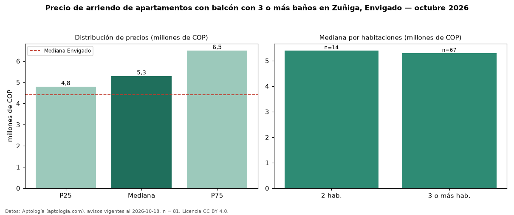

Precio de arriendo de apartamentos con balcón con 3 o más baños en Zuñiga, Envigado — octubre 2026
Con 81 avisos vigentes, el canon mediano de apartamentos con balcón con 3 o más baños en arriendo en Zuñiga, Envigado es COP 5,30 millones al mes. Eso es 7 % más que la mediana de los apartamentos con balcón en arriendo de Zuñiga (COP 4,95 millones, n = 182); este segmento reúne el 45 % de esos avisos. Por metro cuadrado, la mediana es COP 43.478/m² al mes (n = 79), 5 % por debajo de los apartamentos con balcón en arriendo de Zuñiga (COP 45.865/m²). El área mediana anunciada es 120 m². El segmento con más oferta es el de 3 o más habitaciones (67 avisos, mediana COP 5,30 millones); pasar de 2 habitaciones a 3 o más habitaciones cambia la mediana −2 %. El estrato más frecuente es 5 (75 % de los avisos con estrato). La mediana de todos los apartamentos en arriendo de Envigado es COP 4,40 millones (+20 % de diferencia). La mitad central de los avisos va de COP 4,80 millones a COP 6,50 millones (razón 1,4), una dispersión baja. Datos: Aptología (aptologia.com), CC BY 4.0 — https://www.aptologia.com/arriendo/envigado/zuniga. Archivos: PDF, CSV con las cifras y gráfica PNG.

| Avisos únicos | 81 |
|---|---|
| Percentil 25 | COP 4.800.000 |
| Mediana | COP 5.300.000 |
| Percentil 75 | COP 6.500.000 |
| Mediana por m² | COP 43.478 |
Fuente: avisos vigentes de portales inmobiliarios recopilados por Aptología, deduplicados (mínimo 30 avisos únicos por celda). Precios pedidos, no cerrados. Fecha: 2026-10-18.